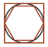

Accueil
Seconde
Première
Terminale
Complémentaires
Expertes
Animations
Archive
Mathématiques Expertes en Terminale
Cours de la classe de terminale
Chapitre 01 : Divisibilité et congruence
Chapitre 02 : Nombres complexes - algèbre
Chapitre 03 : Matrices et graphes
Chapitre 04 : PGCD et applications
Chapitre 05 : Nombres complexes - géométrie
Chapitre 06 : Suites et matrices
Chapitre 07 : Nombres premiers
Manuel
Le Livre Scolaire
Calameo
Outils
Calculatrice
Geogebra
Console Python
Notebook Python
Calculatrice : mode examen
Casio
Texas Instrument
Numworks
Liens
Cahier de calcul pour les Maths Expertes
Baccalauréat général
Réussir au lycée
Eduscol
Le Grand Oral
Présentation du Grand Oral
ParcourSup
Mon Orientation En Ligne
ONISEP
Guide Après le Bac
Portail étudiant
Terminales
Baccalauréat Français International (BFI)
Réussir au lycée
Eduscol